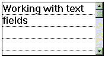

Australian Toolbook User Group



This section is all about working with Toolbook text and text fields.
Toolbook text is always held in a field. A field's borders can be made invisible to give the illusion of the text floating freely on the screen. Alternatively, a field may have a scrolling property, a word wrap property plus more.
Toolbook text fields can hold colored, formatted text, as well as graphics. Toolbook supports a large subset of the rich text format specifications. There is a tip below on importing rich text - there are a few traps to watch out for, like importing your graphics separately.
Paragraph specifications for a text field afect all the text in that field, meaning that if you want a mixture of centred and left justified text in the same field - you are out of luck. You may need to use two fields. This area of Toolbook needs to be improved, and the makers in 'valhalla' - Asymetrix - know it, as of the middle of 1998.
Recordfields are special fields that can only reside on the book background. Their claim to fame is that even though they appear on all pages that use the background on which they live - the text content of the fields changes for every page - allowing you to create a database or simply use them to create consistently formatted page labels across all your pages.
Toolbook 6 text fields can be exported as HTML pages.
To access thousands more tips offline - download Toolbook Knowledge Nuggets